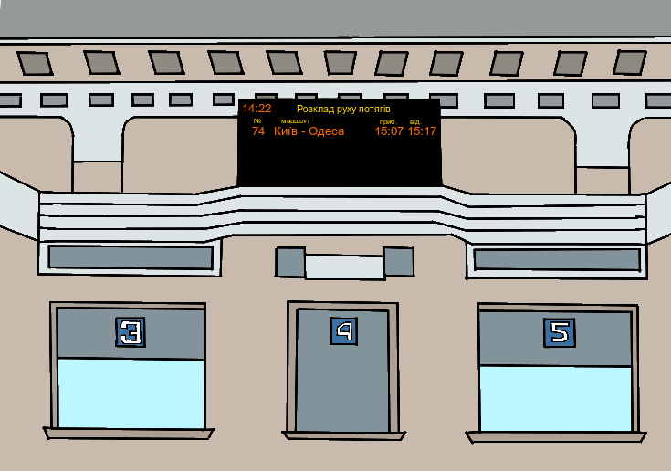

| Обіг | Маршрут прямування | приб. | відпр. | з | по |
| щоденно | Гайворон – Вінниця | 06:10 | – | 2023-12-10 | 2024-12-07 |
| щоденно | Жмеринка-Пас. – Козятин-1 | 06:17 | 06:22 | 2024-06-08 | 2024-12-12 |
| щоденно | Козятин-1 – Жмеринка-Пас. | 06:23 | 06:28 | 2023-12-10 | 2024-12-12 |
| щоденно | Жмеринка-Пас. – Козятин-1 | 08:18 | 08:23 | 2024-06-08 | 2024-12-12 |
| щоденно | Козятин-1 – Жмеринка-Пас. | 08:34 | 08:47 | 2024-06-08 | 2024-12-12 |
| щоденно | Жмеринка-Пас. – Козятин-1 | 09:46 | 10:05 | 2024-06-08 | 2024-12-12 |
| щоденно | Козятин-1 – Жмеринка-Пас. | 10:23 | 10:28 | 2023-12-10 | 2024-12-12 |
| крім пн. | Коростень – Вінниця | 12:00 | – | 2024-06-08 | 2024-12-07 |
| крім пн. | Вінниця – Коростень | – | 14:04 | 2024-06-08 | 2024-12-07 |
| щоденно | Козятин-1 – Жмеринка-Пас. | 15:32 | 15:37 | 2024-06-08 | 2024-12-12 |
| щоденно | Жмеринка-Пас. – Козятин-1 | 15:52 | 15:57 | 2024-06-08 | 2024-12-12 |
| щоденно | Вінниця – Гайворон | – | 18:00 | 2023-12-10 | 2024-12-07 |
| щоденно | Жмеринка-Пас. – Козятин-1 | 18:13 | 18:18 | 2024-06-08 | 2024-12-12 |
| щоденно | Козятин-1 – Жмеринка-Пас. | 18:34 | 18:39 | 2023-12-15 | 2024-12-12 |
| щоденно | Жмеринка-Пас. – Козятин-1 | 21:26 | 21:38 | 2024-01-05 | 2024-12-12 |
| щоденно | Козятин-1 – Жмеринка-Пас. | 22:39 | 22:44 | 2024-08-10 | 2024-12-12 |
Замовити квитки можливо як офлайн на одній з кас в приміщенні вокзалу, так і онлайн на сайті Укрзалізниці.
